Stem borer (Diptera: Drosophilidae) in Amphicarpaea
| Record no.: | 0048 |
|---|---|
| Feeding guild: | Stem borer |
| Taxonomy: | Diptera: Drosophilidae: Stegana vittata |
| Stages observed: | trace, larva, puparium, adult |
| Distribution observed: | IA |
| Hosts in Amphicarpaea: | A. bracteata (American hog peanut) |
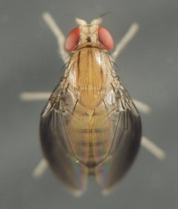
I found a puparium and a larva of this fly in 2021 and 2022, respectively, each in a tunnel in a lower stem of the host. In the 2021 example, the plant had wilted due to the tunneling in the stem.
The larva's body was yellowish-brown and somewhat translucent, with the tracheae and other internal structures partially visible through the integument. In the front was a pair of curved mouthhooks aligned exactly side-by-side. The paired anterior spiracles of the larva each consisted of a central stalk, thickened at the base and tapering toward the apex, bearing a number of distally projecting papillae or tubules, the whole structure at least vaguely reminiscent of a Christmas tree. The posterior spiracles were knob-shaped and reddish-brown in color, much darker than the relatively pale ground color of the larva's body.
The puparium from 2021 was cylindrical, rather elongate (roughly 4.5 times as long as wide), with a modified anterior end that was flattened into a slighly concave disc, the anterior spiracles projecting at approximately a right angle to the plane of the disc. Within the containing stem, this blunted anterior end of the puparium sealed off access to the insect's tunnel (and thus to the rest of the insect's body) neatly and cryptically, a behavior termed "phragmosis" that is also exhibited by many other burrow-forming animals (Rice 1969; Wheeler 1927; Wheeler & Hölldobler 1985). An adult emerged from the puparium the following spring, and B. Sinclair (pers. comm.) identified it.
The weight of evidence points to S. vittata as the stem borer that created the tunnels, and not as a secondary inhabitant of the stems; for further discussion of this evidence, see Eiseman & van der Linden (2024). To my knowledge, no Stegana species in North America has been previously recorded as a stem borer in an herbaceous plant (but see Laštovka & Máca (1982), O'Grady (2002), and Plakidas (2023) for examples of other worldwide collecting and rearing records).
Anatomical terminology for spiracles in this report is based on the description of Drosophila melanogaster in Wipfler et al. (2013).
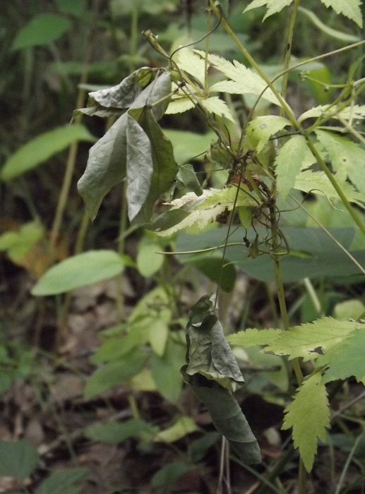
 Prev
Prev
{kind=link}
{kind=link}
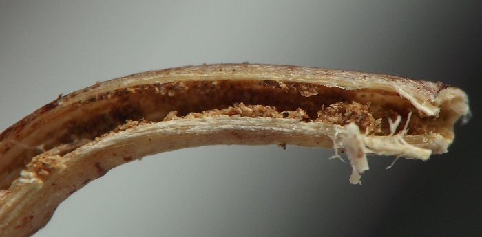
{kind=link}
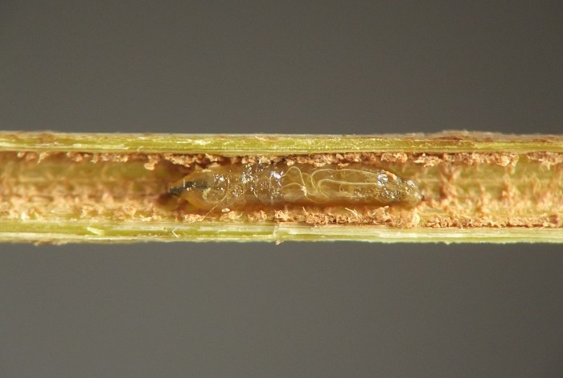
{kind=link}
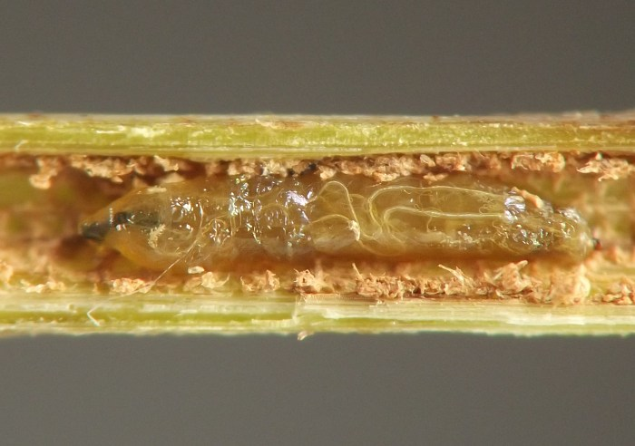
{kind=link}
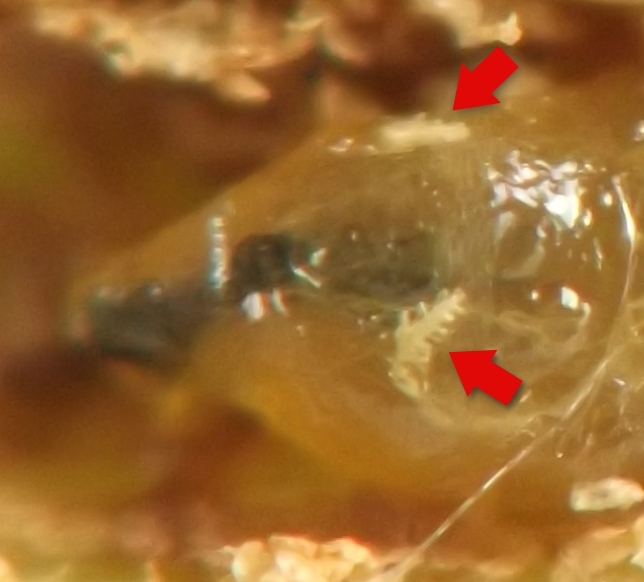
{kind=link}
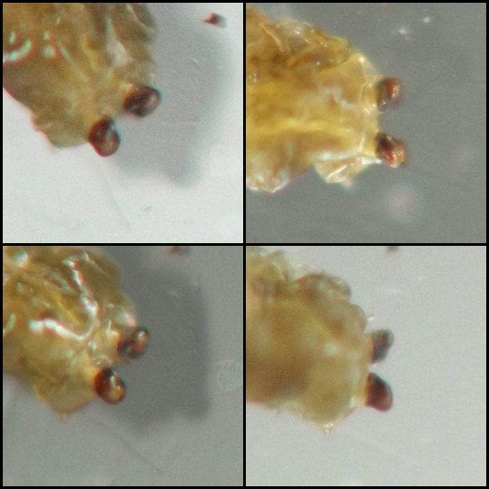
{kind=link}
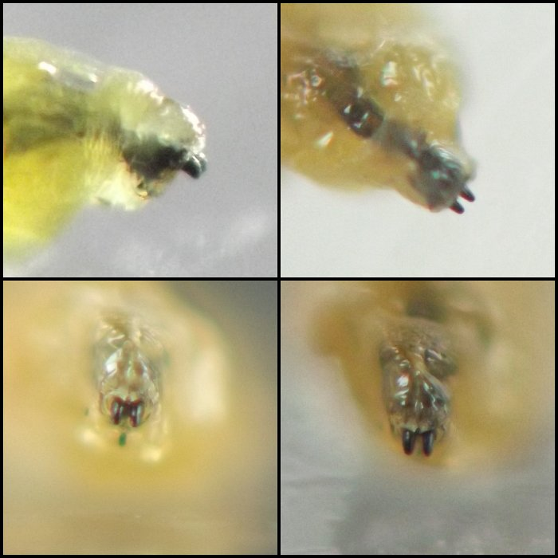
{kind=link}
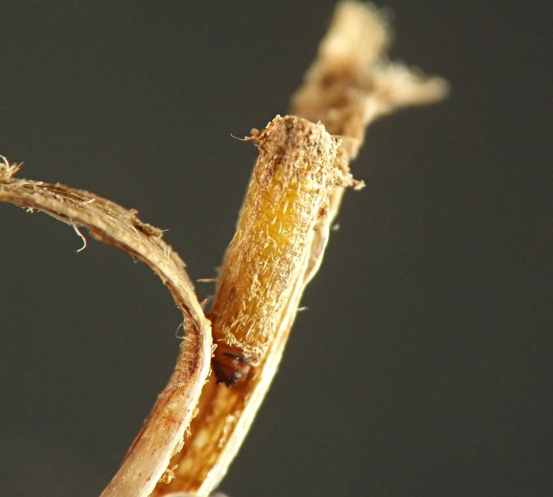
{kind=link}
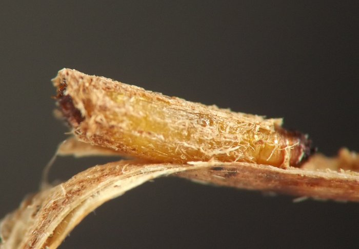
{kind=link}
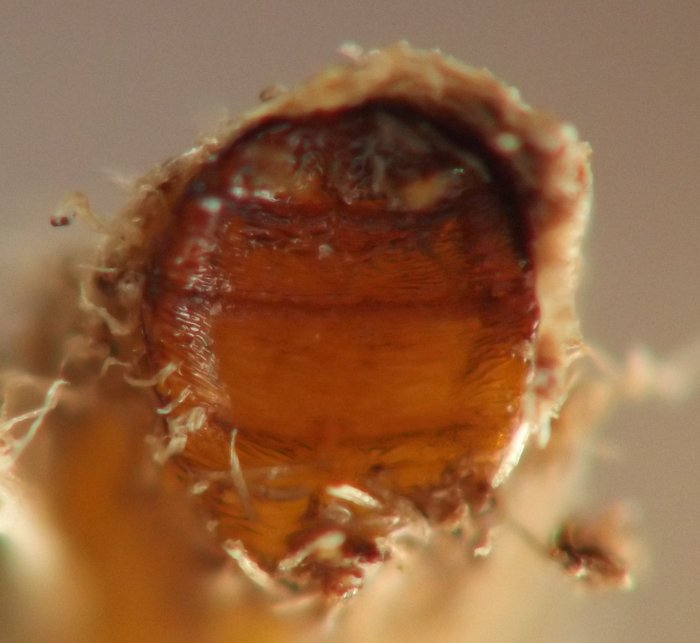
{kind=link}
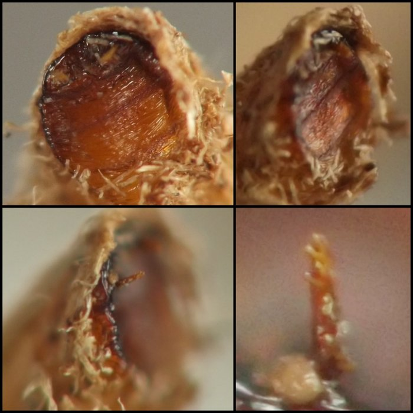
{kind=link}
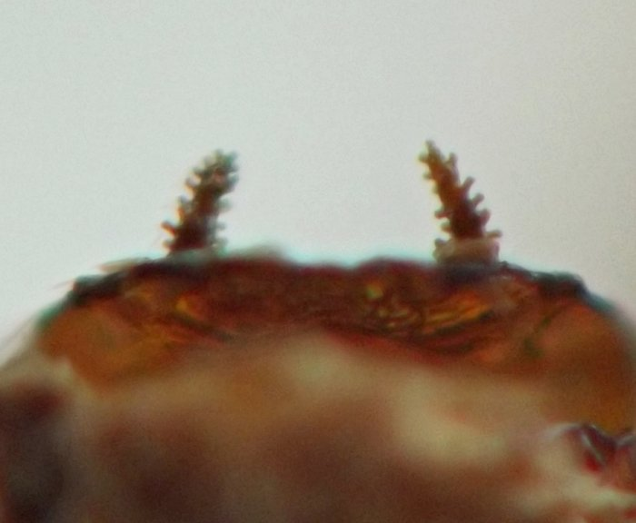
{kind=link}
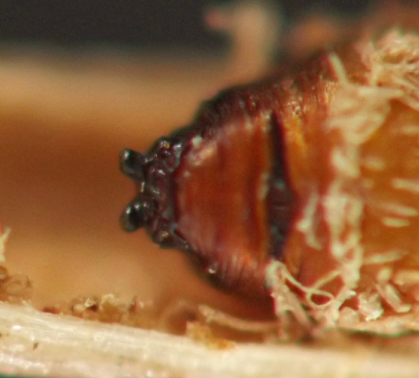
{kind=link}
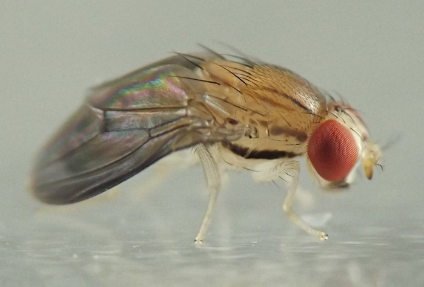
{kind=link}
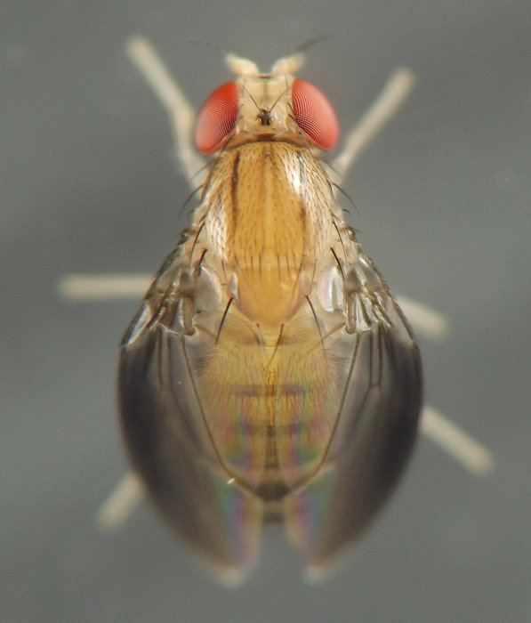
{kind=link}
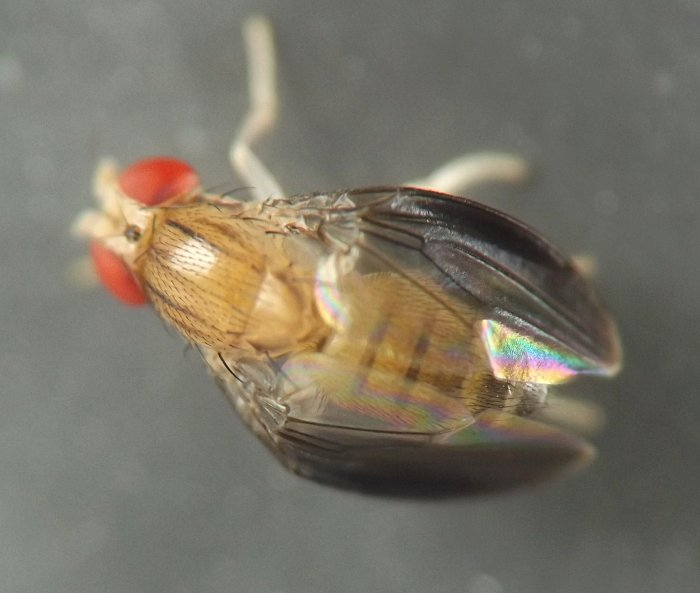
{kind=link}
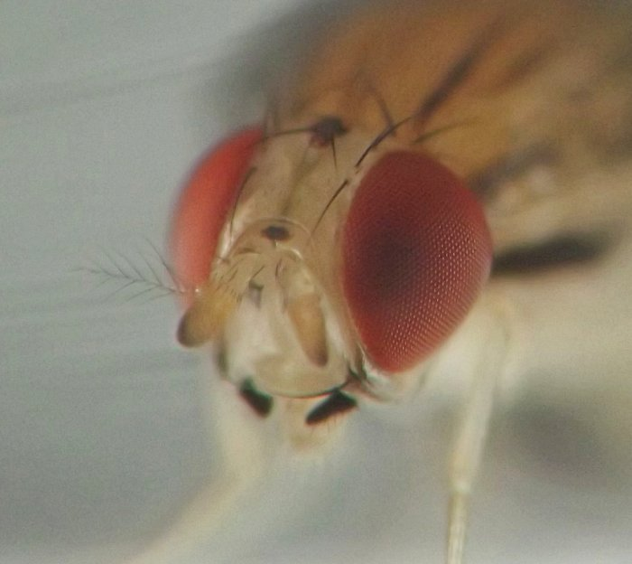
{kind=link}
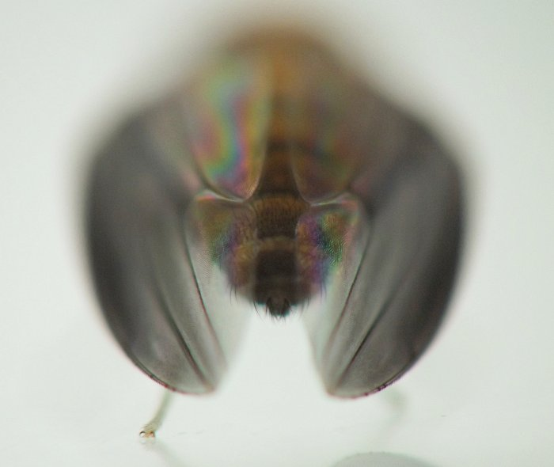
{kind=link}
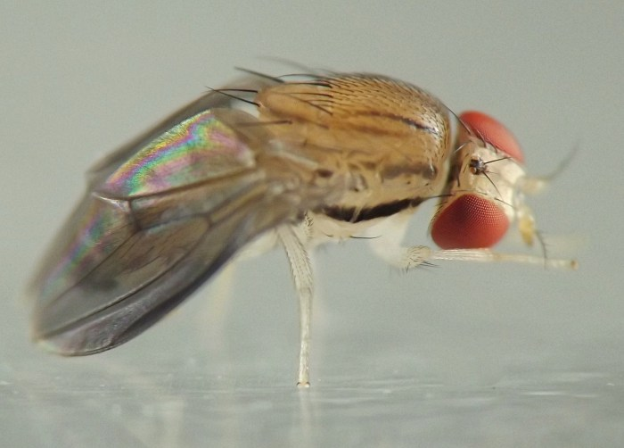
{kind=link}
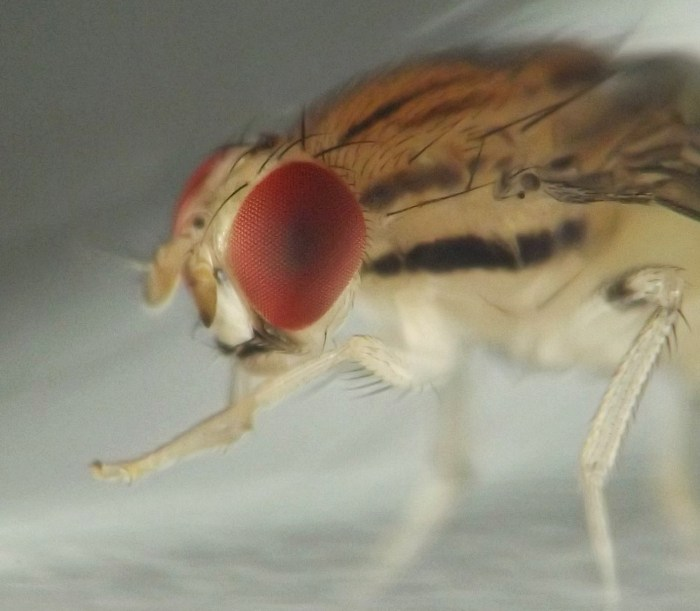
Field photo taken 08/23/21 (01); coll. 08/20/22, photos same day (dead larva in stem: 17-20, 22); coll. 08/21/21, photos of puparium and larval damage taken on 08/21/21-08/22/21 (03-06, 08-09), adult em. 04/07/22 and photos of adult and spent puparium taken on 04/07/22-04/08/22 (07, 10-13, 15, 23-24).
- Eiseman, C.S. and J. van der Linden. 2024. New rearing records of Drosophilidae (Diptera: Ephydroidea) from plant tissue. Proceedings of the Entomological Society of Washington 126(2): 172-182. [return to in-text citation]
- Laštovka, P. and J. Máca. 1982. European and North American species of the genus Stegana (Diptera, Drosophilidae). Annotationes Zoologicae et Botanicae (Slovenské Norodné Múzeum) 149:1-38.[return to in-text citation]
- O'Grady, P.M. 2002. New records for introduced Drosophilidae (Diptera) in Hawai‘i. In Records of the Hawaii Biological Survey for 2000—Part 2: Notes. Bishop Museum Occasional Papers 69:34-35.[return to in-text citation]
- Plakidas, J. 2023. Stegana antigua Wheeler 1960. Diptera: Drosophilidae - Stegana antigua. Contributor post on BugGuide.net. Retrieved July 9, 2024 from https://bugguide.net/node/view/2322536.[return to in-text citation]
- Rice, M.E. 1969. Possible boring structures of sipunculids. Am. Zoologist 9: 803-812.[return to in-text citation]
- Wheeler, D.E. and B. Hölldobler. 1985. Cryptic phragmosis: the structural modifications. Psyche 92 (4): 337–353.[return to in-text citation]
- Wheeler, W.M. 1927. Physiognomy of insects. Q. Rev. Biol. 2: 1-36.[return to in-text citation]
- Wipfler, B., Schneeberg, K., Löffler, A., Hünefeld, F., Meier, R., and R.G. Beutel. 2013. The skeletomuscular system of the larva of Drosophila melanogaster (Drosophilidae, Diptera) – a contribution to the morphology of a model organism. Arthropod Structure & Development 42(1): 47-68.[return to in-text citation]
Page created: November 12, 2023. Last update: February 1, 2026